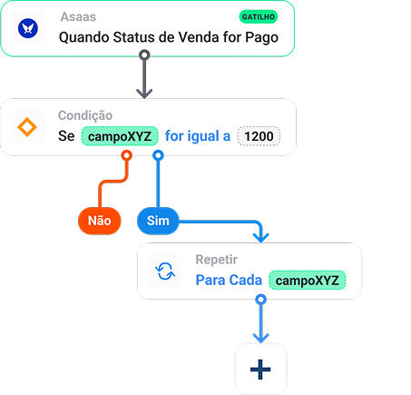

02 / Sinapse Finance
Sinapse Finance
Menos esforço manual em formulários e automações financeiras.
Contexto e meu papel
Como designer principal na Sinapse, que terceirizava operações financeiras, trabalhei em duas iniciativas com outra designer, PO, especialistas e desenvolvimento.
Formulários: além dos bugs
Clientes evitavam os formulários e pediam aos consultores que preenchessem informações. Em aproximadamente duas semanas, investiguei o uso, redesenhei o fluxo e acompanhei a primeira medição após o lançamento.
Gravações e relatos revelaram campos pouco claros, limites de upload desconhecidos e mensagens insuficientes. Reescrevi os campos, acrescentei orientações e indiquei como corrigir erros.
Em uma medição posterior mais curta, as submissões bem-sucedidas passaram de 58% para aproximadamente 65%. A rejeição no Google Analytics caiu de cerca de 75% para menos de 40%, e o tempo médio diminuiu.
A oportunidade mais ampla continuava sendo reduzir a digitação. Coleta por conversa e extração de documentos foram consideradas, mas não implementadas durante minha participação.
Automações: liberdade com limites
As integrações financeiras existiam sem representação visual. Mapeei regras com especialistas e desenvolvimento e explorei um diagrama com elementos arrastáveis. Sua liberdade, porém, ampliava as combinações e exceções técnicas.
Escolhi um fluxo linear com etapas em cards e configurações divididas em tarefas menores. Cada automação poderia ser acompanhada, desabilitada e consultada por seu registro de erros, dando visibilidade ao funcionamento dos fluxos antes dependentes da própria equipe da Sinapse.
Nos testes, acrescentei títulos descritivos para esclarecer a função das etapas.
O acesso aos clientes era limitado. Participantes familiarizados com softwares de produtividade compreenderam a sequência, mas tiveram dificuldades com conceitos financeiros. Os testes avaliavam a interação, sem substituir a validação com o público principal.



Resultados e aprendizado
O formulário foi implementado e medido. As automações ficaram aprovadas internamente, com desenvolvimento iniciado; não acompanhei a entrega completa nem métricas de adoção.
Hoje, negociaria mais cedo o acesso aos usuários e explicitaria o alcance de cada validação.